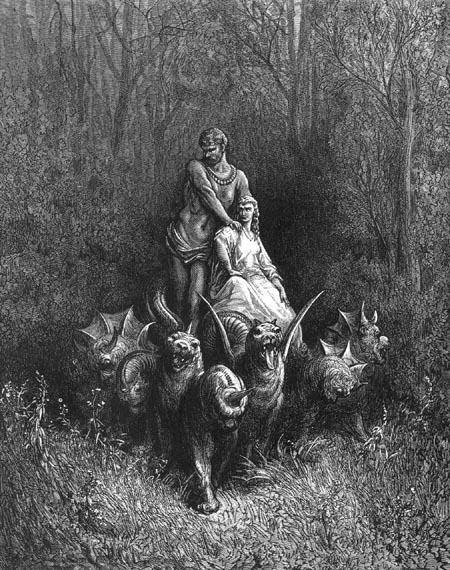

Canto XXXII
A árvore do conhecimento do bem e do mal
As sete revelações
Meus olhos estavam fixos nela. Tão ávidos em saciar aquela sede de dez anos, esqueceram todos os outros sentidos, hipnotizados pelo seu sagrado sorriso. Mas de repente, meu olhar se desviou, quando ouvi:
- É demais! Ele está olhando demais! - gritaram as ninfas à minha esquerda.
Eu estava cego, como aquele que passa tempo excessivo olhando para o Sol. Demorei, mas aos poucos fui me acostumando com a luz fraca da floresta. À direita estavam os candelabros, já retornando. Quando a carruagem puxada pelo Grifo deu meia volta para seguir o cortejo, eu Estácio e Matelda a seguimos ao lado de sua roda direita. A procissão percorreu a distância de uns três vôos de flecha antes de parar mais uma vez. Beatriz desceu do carro e eu ouvi todos murmurarem "Adão" enquanto contornavam uma árvore imensa. Sua copa alargava-se com a altura, mas seus galhos estavam nus, sem folhas, flores ou frutos.
- Beato és tu, Grifo, pois teu bico nada prova deste tronco que é doce aos lábios, mas que amarga no estômago - gritavam todos, em volta daquela árvore.
- Assim se conserva a semente de tudo o que é justo - respondeu o Grifo. Depois, agarrando-se ao timão da carruagem que havia puxado, levou-o ao pé da árvore despida, devolvendo a ela o que era dela. E então, toda a árvore floresceu, com folhas, frutos e flores de cor violeta.
Eu não reconheci o hino que aquela gente começou a cantar, nem consegui ouvi-lo até o fim, pois peguei no sono. Acordei com uma voz me chamando:
- Acorda! Que estás fazendo?
Era Matelda. Ela estava em pé diante de mim.
- Onde está Beatriz? - perguntei, inquieto.
- Está ali - respondeu -, sentada na sombra da árvore, sobre suas raízes. Olha a companhia em volta dela. Os outros foram para o Céu junto com o Grifo.
Não sei se ela falou mais que isso, pois meus olhos já estavam diante de Beatriz. Ela estava sentada sozinha, sobre a terra, tomando conta da carruagem que o Grifo havia deixado. Em sua volta estavam as sete ninfas.
- Por pouco tempo permanecerás aqui - disse ela -. Depois, viverás para sempre comigo como cidadão daquela Roma onde Cristo é romano. Então, em benefício do mundo que vive perdido, presta bem atenção na carruagem e não deixes de escrever tudo o que vires aqui, quando estiveres de volta.
Em obediência a Beatriz, parei e observei a carruagem como ela havia me pedido. E então, como um raio, desceu dos céus uma águia, rasgando os galhos e as folhas recém nascidas daquela árvore, arrancando todas as suas flores. Com toda sua força, ela atingiu a carruagem, que estremeceu como navio em tempestade.
Depois entrou uma raposa no banco do triunfal veículo. Tão magra estava que parecia faminta. Mas Beatriz pôs aquela massa de pele e ossos para correr, repreendendo-a por todo o mal que havia causado.
Mais uma vez desceu a águia através da árvore. Desta vez acertou em cheio a estrutura do carro, e lá deixou algumas de suas penas douradas. Como a dor que jorra de um coração amargurado, desceu uma voz do Céu, que disse:
- Ó meu barquinho, como estás mal carregado!
Então pareceu-me que a terra se abria entre as duas rodas, e de lá saiu um dragão que atirou sua cauda contra o carro, arrancando-lhe o piso.
O que sobrou do carro começou a se transformar. Como ervas que nascem sobre um solo fértil, nasceu sobre ele uma cobertura de plumas (talvez, com a mais pura das intenções). Em pouco tempo, toda a carruagem, inclusive suas duas rodas e timão, ficou totalmente encoberta pelas plumas. E começaram a brotar cabeças por toda parte. Três nasceram no timão e uma pipocou em cada um dos quatro cantos do carro. As primeiras tinham chifres como os de boi e as outras quatro, tinham um só, na testa. Jamais alguém vira monstros iguais.
Apareceu depois, sentada sobre o carro, uma prostituta, e do seu lado, um gigante ciumento. Vez ou outra, os dois se beijavam. Mas, quando ela lançou seu olhar lascivo sobre mim, seu amante a espancou com brutalidade da cabeça aos pés. Depois, louco de ciúmes, o gigante arrancou o monstro que estava preso na árvore e o arrastou para a floresta, levando o carro para tão longe que eu os perdi de vista.
|  |
| A prostituta e o gigante sentados sobre o monstro de dez chifres e sete cabeças (que antes era o carro), que representa a Igreja. Ilustração
de Gustave Doré (século XIX). |
|